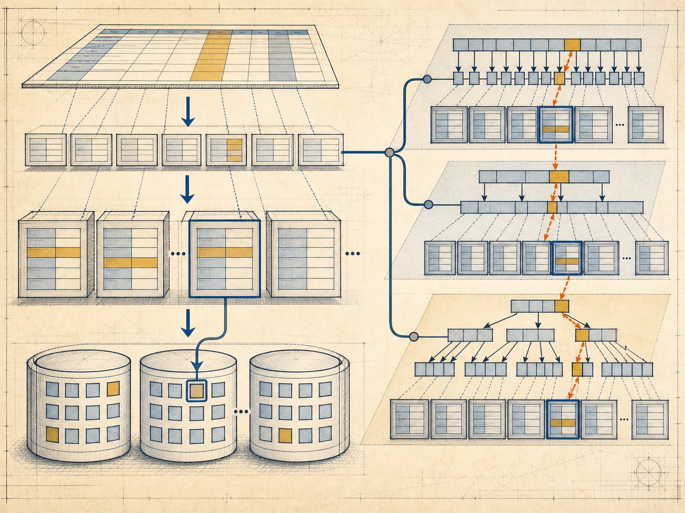
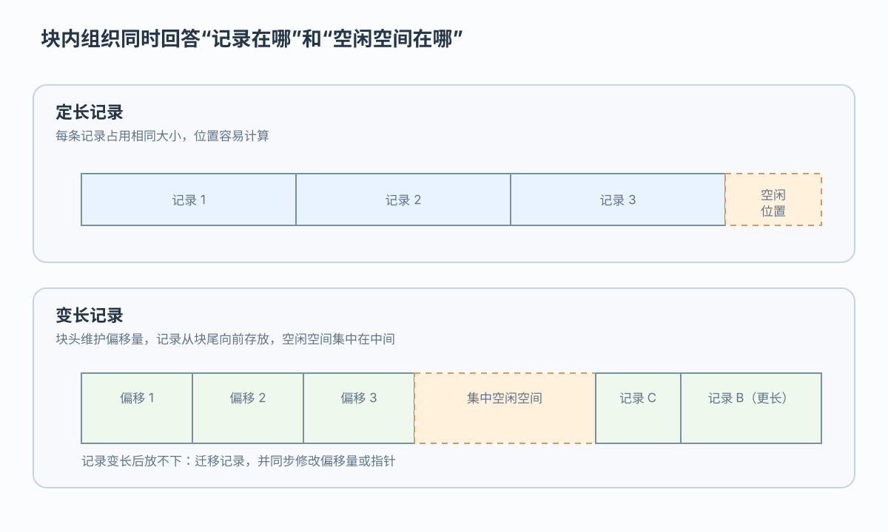
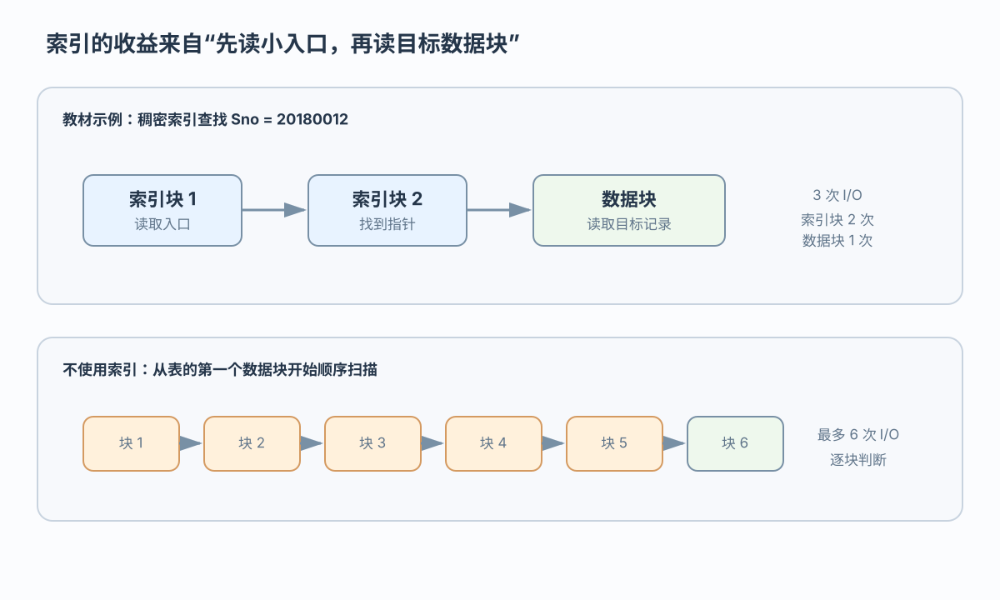
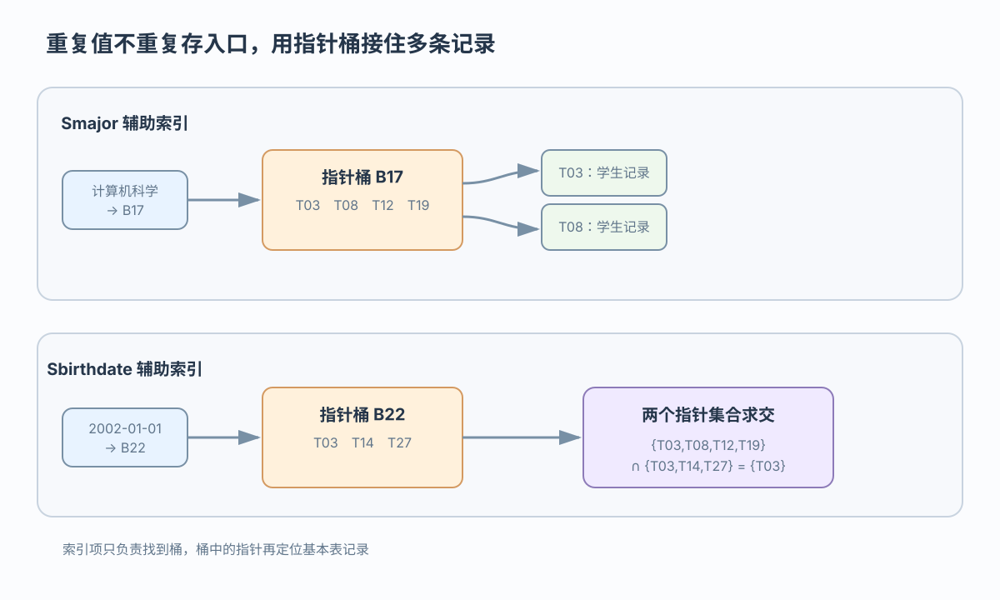

插入
插入记录时，先分配空闲空间并更新定位信息
用文件、块和记录解释数据定位
 VER. 2608.2
Built with impress.js
VER. 2608.2
Built with impress.js
一次查询可以沿逻辑表、文件、块和记录逐层定位数据
逻辑层次与物理层次共同支撑数据访问

表空间、段、分区是常见的管理层次示意；具体名称和落盘方式随 DBMS 变化，索引路径是表组织之外的附加访问结构
块是存储分配和 I/O 处理的基本单位
记录格式会影响读取、修改、删除和迁移
| 记录方式 | 优势 | 代价 |
|---|---|---|
| 定长记录 | 位置计算简单，字段访问直接 | 可能需要填充或预留空间 |
| 长度标记 | 读取时先知道记录／字段长度 | 需要解释长度信息 |
| 偏移量 | 用字段起止位置定位变长内容 | 修改后需要维护偏移量 |
| 字段分离 | 定长字段与变长字段分开存储 | 访问路径和管理更复杂 |
块头、偏移量表和空闲空间共同决定记录如何被找到

插入记录时，先分配空闲空间并更新定位信息
删除记录时，标记空闲或压缩空间，并更新偏移量表
变长记录原位置不足时，要迁移记录并同步相关定位信息
同一份数据可以为不同事务选择不同物理形态
| 组织方式 | 适合的访问 | 主要代价 |
|---|---|---|
| 堆 | 无序插入和不固定条件 | 查询可能需要全表扫描 |
| 顺序 | 按排序属性查找或范围访问 | 插入、修改可能迁移记录 |
| 多表聚簇 | 经常连接的相关记录 | 其他查询可能更分散 |
| B+ 树存储 | 按键查找和范围访问 | 需要维护树结构 |
| 哈希存储 | 等值条件快速定位 | 范围访问和溢出处理较弱 |
不等于。B+ 树／哈希表组织负责数据存放，B+ 树／哈希索引是表外的访问结构
物理邻近只对特定访问路径有利
| 任务 | 聚簇后的物理变化 | 查询或维护结果 |
|---|---|---|
按 Sno 查学生选课 | Student ⋈ SC 的相关记录按 Sno 相邻 | 连接查询可能少读跨块 I/O |
| 按专业和性别筛选学生 | 学生记录按学号聚簇，不保证同类记录相邻 | 可能读取更多数据块 |
新学期增加 SC 记录 | 为保持相邻关系而迁移或重新安排记录 | 更新和空间维护成本增加 |
聚簇键示意为 Sno；同一物理邻近关系会让不同工作负载得到不同结果
索引通常用较小的结构定位少量目标记录，但并非所有结果规模都适合索引访问
索引减少扫描但增加空间、建立和更新维护成本
选择性较高、返回记录较少时索引更有利；若条件命中大多数记录，顺序扫描可能更便宜
基本表按 Sno 有序；查 20180012 时先查索引，再读数据块

| 路径 | 索引项 | 访问结果 |
|---|---|---|
| 稠密索引 | 每条记录一个值和指针 | 本例约 3 次 I/O |
| 直接扫描 | 没有附加入口 | 本例约 6 次 I/O |
| 代价 | 索引本身占空间 | 增删改时同步维护 |
本例的 3 次与 6 次 I/O 依赖块容量和记录分布，不是所有 DBMS 或工作负载的固定性能承诺
通常每个物理块保留一个入口，定位后还要在目标块内顺序搜索
例如查找 Sno = 20180012，先选不超过目标值的最大入口，再在对应块内顺序搜索；若目标块和后续块的首键都已超过目标值，可判定不存在
只要不影响块首记录，部分块内更新可以不改稀疏入口；稀疏索引因此比稠密索引更小
从高层逐级下降到记录；分层可缩小大索引的查找范围
多级查找按层向下；第一级的稠密或稀疏选择取决于基本表和索引组织
重复值通过指针桶连接到多条记录

| 特征 | 辅助索引的做法 | 设计意义 |
|---|---|---|
| 非排序属性 | 通常建立稠密入口 | 多个访问路径 |
| 重复取值 | 引入指针桶 | 管理多条记录指针 |
| 多条件查询 | 多个指针集合求交 | 组合筛选 |
| 表更新 | 同步维护指针 | 额外写入代价 |
指针最终要定位基本表记录；当返回记录很多时，顺序扫描可能比辅助索引更便宜
数据组织和索引共同降低块访问代价，同时引入空间和维护成本
记录表示、块内空间和表组织决定数据如何存放
顺序表上的主索引提供稠密、稀疏和多级查找入口
辅助索引的选择取决于选择性和更新维护代价
逻辑／物理组织、顺序表索引和辅助索引构成基础；B+ 树、哈希和位图索引还需结合具体索引结构分析
Student ⋈ SC、Sno、专业／性别查询解释多表聚簇为何可能增加或减少 I/O？Sno 有序的表上，20180012 的稠密、稀疏和多级查找路径分别怎样走？Smajor 重复时辅助索引和指针桶怎样工作？多条件如何求交？何时扫描更便宜，增删改需要维护哪些索引？